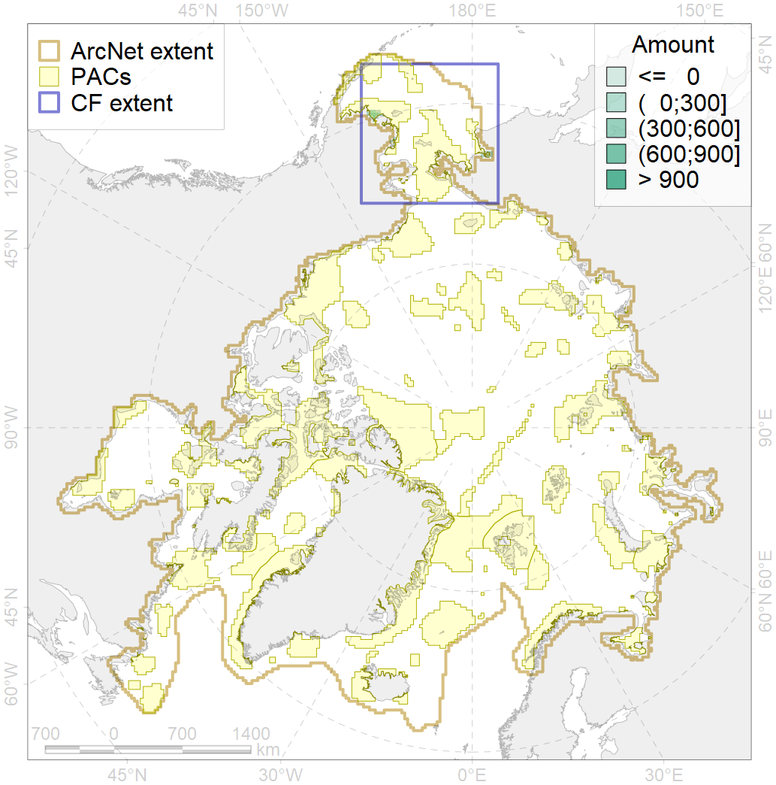
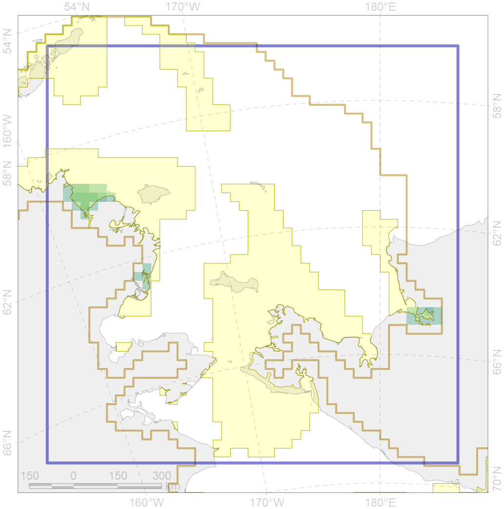

8018

| CF code | 8018 |
| CF name | Chukchi Sea estuaries |
| Time Period | 1900s - 1990s |
| Source(s) | http://data.unep-wcmc.org/datasets/25 |
| Seasonality | 1-12 |
| Depth Horizon | 0-30 |
| Methodology | published maps, field surveyes |
| Use Restrictions | UNEP-WCMC WDPA Data Licence |
| Author Name | B. Solovyev |
| Notes | estuaries with discharge 1001-2000 |
| Scenario’s Target | 0.5 |
| Target Achievement | 0.952 (Scenario: 190.5%) |
| PAC | Share of the Total Amount within the PAC | Share of the Target Achievement for the ArcNet | PAC’s Contribution to the Target Achievement |
|---|---|---|---|
| 3 | 69.2%82.1% | 138.5%164.1% | 72.7%86.2% |
| 4 | 6.9%15.7% | 11.4%26.3% | 6.0%13.8% |
| inner | 76.1%97.8% | 149.9%190.4% | 78.7%100.0% |
| outer | 23.9%86.8% | 40.6%164.0% | 21.3%86.1% |
| † supplement values are for area consistence whereas principal values are for Accenter compatible gridded stats |